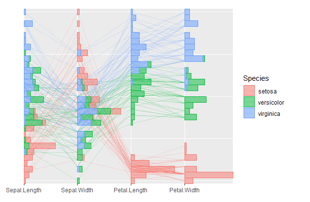

It provides materials (i.e. serialaxes objects) to visualize high dimensional data in ggplot.
Documentation: https://great-northern-diver.github.io/ggmulti/
Introduction
Package ggmulti extends the ggplot2 package to provide some high dimensional visualization functionality, such as
Serialaxes coordinates (i.e., parallel or radial axis systems)
General glyphs (e.g., polygons, images) to appear a scatterplot.
“More general”
geom_histogramandgeom_densityto allow them to appear on serial axes.
Serialaxes Coordinates
Parallel coordinates
library(ggmulti)
p <- ggplot(iris,
mapping = aes(Sepal.Length = Sepal.Length,
Sepal.Width = Sepal.Width,
Petal.Length = Petal.Length,
Petal.Width = Petal.Width,
colour = Species)) +
geom_path(alpha = 0.2) +
coord_serialaxes()
p
We can also construct a radar plot by setting axes.layout = "radial" in coord_serialaxes. In addition, we can add histogram layer on top
p +
geom_histogram(mapping = aes(fill = Species), alpha = 0.5)
Glyphs
The flag of Canada
canada <- data.frame(
xmin = c(-2, -1, 1),
xmax = c(-1, 1, 2),
ymin = rep(-1.2, 3),
ymax = rep(1.2, 3),
fill = factor(c(1,2,1))
)
p <- ggplot() +
geom_rect(data = canada,
mapping = aes(xmin = xmin, xmax = xmax,
ymin = ymin, ymax = ymax,
fill = fill),
colour = "black") +
geom_polygon_glyph(data = data.frame(x = 0, y = 0),
mapping = aes(x = x, y = y),
polygon_x = x_maple,
polygon_y = y_maple,
fill = "red",
size = 12) +
scale_fill_manual(values = c("red", "white")) +
theme_void() +
theme(legend.position = "none")
p
We can save it as a png object, then call geom_image_glyph to display the image glyph
ggsave("canada.png", type = "cairo", bg = "white")
images <- png::readPNG("canada.png")
ggplot(data = data.frame(x = c(1,2,1.5,2,1), y = c(1,1,1.5,2,2)),
mapping = aes(x = x, y = y)) +
geom_image_glyph(images = rep(list(images), 5)) +
coord_cartesian(xlim = extendrange(c(1,2)),
ylim = extendrange(c(1,2)))
“More general” geom_histogram and geom_density
Functions geom_histogram_ and geom_density_ are more general geom_histogram and geom_density since these two functions can accommodate both x and y simutaniously. If only one is provided, geom_histogram or geom_density will be executed.
The following figure displays the back to back plot (histogram and density)
iris %>%
tidyr::pivot_longer(cols = -Species,
names_to = "Outer sterile whorls",
values_to = "values") %>%
ggplot(mapping = aes(x = `Outer sterile whorls`,
y = values,
fill = Species)) +
geom_histogram_(scale.y = "variable",
alpha = 0.5,
adjust = 0.6) +
geom_density_(scale.y = "variable",
adjust = 0.6,
alpha = 0.5,
colour = NA,
positive = FALSE)